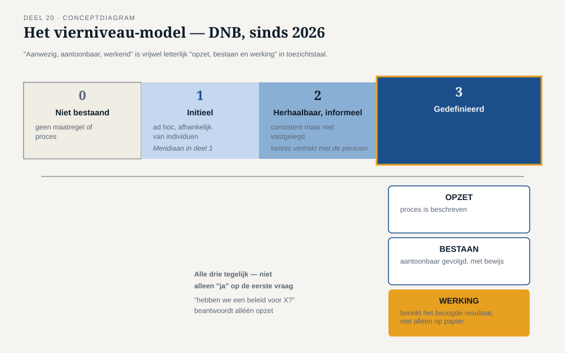
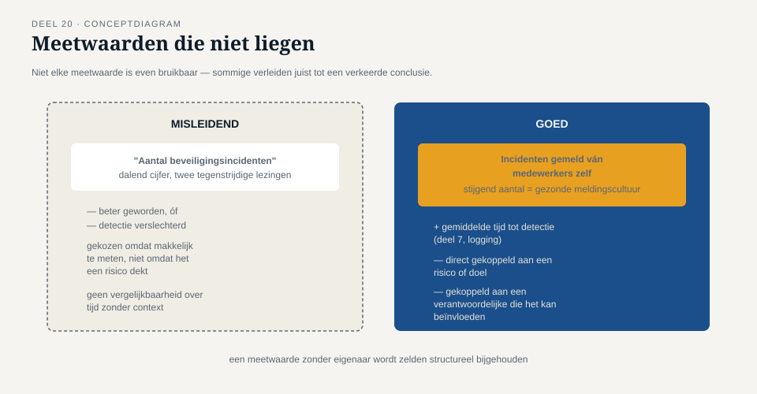
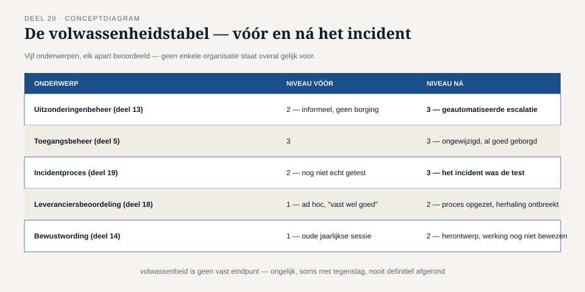

Deel 20 — Volwassenheid meten en aantoonbaarheid
Reader · Ductus-cursus Informatiebeveiliging en privacy · niveau 2 (professional) · deel 20 van 22
Dit deel is zelfstandig leesbaar en los aanbiedbaar — ook voor wie de rest van de cursus niet volgt.
Waarom dit deel op zichzelf kan staan
De vraag die dit deel beantwoordt, is universeel voor elke organisatie, ongeacht of ze de rest van deze cursus heeft gevolgd: hoe weet je eigenlijk hoe volwassen je informatiebeveiliging en privacy zijn? Niet "hebben we een firewall" of "hebben we een privacyverklaring" — die vragen zijn met een simpel ja of nee te beantwoorden en zeggen weinig. De vraag die er echt toe doet is genuanceerder: is wat er is, ook aantoonbaar, en is het ook werkend? Dit deel introduceert een instrument om die vraag systematisch te beantwoorden, met een voorbeeld uit het Meridiaan-Mutatieplatform ter illustratie, maar volledig bruikbaar voor elke organisatie.
1. De rode draad, herhaald voor wie de rest van de cursus niet kent
Door deze hele cursus loopt één zin: aanwezig is niet hetzelfde als aantoonbaar, en aantoonbaar is niet hetzelfde als werkend. Een maatregel kan op papier bestaan (aanwezig) zonder dat iemand kan laten zien wanneer hij voor het laatst is gecontroleerd (aantoonbaar), en zelfs een aantoonbaar gecontroleerde maatregel kan bij nader onderzoek niet doen wat hij zou moeten doen (werkend). Volwassenheid meten is niets anders dan deze drieslag systematisch, per onderdeel van een organisatie, toepassen.
2. Het herziene DNB-model als voorbeeld van een goed volwassenheidsmodel
Een bruikbaar, actueel voorbeeld van zo'n instrument is het model dat De Nederlandsche Bank sinds begin 2026 hanteert in haar sectorbrede uitvragen (de SBA-Cyberweerbaarheid voor instellingen binnen de reikwijdte van de Europese DORA-verordening, en de SBA-Informatiebeveiliging voor overige onder toezicht staande instellingen). Dit model kent vier niveaus:
- Niveau 0 — Niet bestaand. Er is geen enkele maatregel of proces voor het betreffende onderwerp.
- Niveau 1 — Initieel. Er gebeurt iets, maar ad hoc, afhankelijk van individuen, zonder vastgelegd proces. Dit is precies de situatie waarin Meridiaan zich in deel 1 van deze cursus bevond: losse, individuele acties zonder systematiek.
- Niveau 2 — Herhaalbaar maar informeel. Er is een min of meer consistente praktijk, maar ze is niet formeel vastgelegd — als de persoon die het weet vertrekt, gaat de kennis mee.
- Niveau 3 — Gedefinieerd: opzet, bestaan en werking. Dit hoogste niveau vereist expliciet alle drie: een vastgelegd opzet (het proces is beschreven), aantoonbaar bestaan (het proces wordt daadwerkelijk gevolgd, met bewijs), en geverifieerde werking (het proces bereikt daadwerkelijk het beoogde resultaat, niet alleen op papier).
De overeenkomst met de rode draad van deze cursus is geen toeval maar illustreert waarom dit model bruikbaar is: "opzet, bestaan en werking" is vrijwel letterlijk "aanwezig, aantoonbaar en werkend" in toezichtstaal. Een organisatie die alleen niveau 1 of 2 haalt, heeft mogelijk prima intenties en zelfs functionerende praktijken, maar kan niet aantonen dat ze structureel en herhaalbaar werken — precies het probleem dat Meridiaan bij de verlopen accounts (deel 5, niveau 1) en de testomgevingen (deel 8, niveau 1) had.
3. Waarom "opzet, bestaan én werking" drie aparte vragen zijn
Een veelgemaakte fout bij zelfevaluatie is te stoppen bij de eerste vraag: "hebben we een beleid voor X?" Ja, dus niveau 3, toch? Nee — dat beantwoordt alleen opzet. De twee vervolgvragen zijn net zo essentieel:
- Bestaan: kun je aantonen dat het beleid daadwerkelijk wordt gevolgd — bijvoorbeeld via logs, steekproeven, of een recertificatie (deel 5)? Een beleid dat bestaat maar waarvan niemand ooit heeft gecontroleerd of het wordt nageleefd, haalt dit niveau niet.
- Werking: als je het proces test — bijvoorbeeld door een steekproef te trekken, een simulatie te draaien, of een back-up daadwerkelijk terug te zetten (deel 7) — bereikt het dan het beoogde resultaat? Een proces kan aantoonbaar bestaan (iedereen volgt de stappen) en toch niet werken (de uitkomst is niet wat bedoeld was).
Dit onderscheid is precies waarom een goede zelfevaluatie meer vraagt dan een checklist met ja/nee-vinkjes. Per onderwerp moeten alle drie vragen apart en eerlijk worden beantwoord.
4. Meetwaarden die niet liegen
Om volwassenheid niet alleen kwalitatief maar ook kwantitatief te kunnen volgen, zijn meetwaarden (metrics) nodig — maar niet elke meetwaarde is even bruikbaar. Een goede meetwaarde is:
- Direct gekoppeld aan een risico of doel, niet gekozen omdat hij toevallig makkelijk te meten is. "Aantal beveiligingsincidenten" is bijvoorbeeld een verleidelijke maar misleidende meetwaarde: een dalend aantal kan betekenen dat de beveiliging beter is geworden, óf dat de detectie is verslechterd (minder incidenten worden opgemerkt). Een betere combinatie: incidenten gemeld ván medewerkers zelf (een stijgend aantal kan hier juist een teken van gezonde meldingscultuur zijn, deel 14) naast de gemiddelde tijd tot detectie (deel 7, logging).
- Vergelijkbaar over tijd, zodat trends zichtbaar worden in plaats van losse momentopnames.
- Gekoppeld aan een verantwoordelijke die de meetwaarde daadwerkelijk kan beïnvloeden — een meetwaarde zonder eigenaar wordt zelden structureel bijgehouden.
5. Zelfevaluatie als instrument, niet als eenmalige oefening
Een volwassenheidsbeoordeling is, net als de risicobeoordeling uit dit niveau, geen momentopname die je eenmaal uitvoert en dan naast je legt. De meest waardevolle toepassing is een periodieke, herhaalde zelfevaluatie — bijvoorbeeld jaarlijks — waarbij dezelfde onderwerpen telkens opnieuw langs dezelfde vier niveaus worden beoordeeld. Dit maakt niet alleen de huidige stand zichtbaar, maar ook de richting: gaat een organisatie vooruit, staat ze stil, of — een reëel risico bij organisaties die volwassenheid eenmaal bereiken en dan denken "klaar te zijn" — glijdt ze terug naar een lager niveau doordat processen verwateren zonder onderhoud?
6. Toegepast op het Mutatieplatform
Ter illustratie: Karin en Merel passen het model toe op vijf onderwerpen binnen het Mutatieplatform, een jaar na de livegang en enkele maanden na het incident uit deel 19.
| Onderwerp | Niveau vóór het incident | Niveau ná de structurele maatregel |
|---|---|---|
| Uitzonderingenbeheer | 2 (herhaalbaar, informeel — geen geautomatiseerde borging) | 3 (opzet + bestaan + werking, met geautomatiseerde escalatie) |
| Toegangsbeheer (autorisatiematrix, deel 5) | 3 | 3 (ongewijzigd, al eerder goed geborgd) |
| Incidentproces (deel 19) | 2 vóór het incident (nog niet echt getest) | 3 (het incident zelf was, hoe ongewenst ook, de meest overtuigende test van werking) |
| Leveranciersbeoordeling (deel 18) | 1 (ad hoc, zoals bij Tariks "vast wel goed") | 2 (een proces is nu opgezet, maar structurele herhaling en steekproeven ontbreken nog) |
| Bewustwording (deel 14) | 1 (de oude jaarlijkse sessie) | 2 (het herontwerp is ingevoerd, werking moet nog over een langere periode blijken) |
Deze tabel laat precies zien waarom volwassenheid geen vast eindpunt is: sommige onderwerpen (toegangsbeheer) stonden er al goed voor, andere (het incidentproces) bereikten niveau 3 pas dóór een pijnlijke, ongewenste gebeurtenis, en weer andere (bewustwording, leveranciersbeoordeling) zijn onderweg maar nog niet klaar. Dat is precies zoals volwassenheid in de praktijk verloopt: ongelijk, soms met tegenslag, en nooit definitief afgerond.


